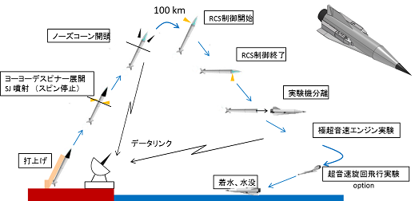

お知らせ / Notice
現在、お知らせはありません。
佐藤研とは？？
極超音速旅客機(左)と二段式スペースプレーン(右) ©JAXA
佐藤研究室では、将来の宇宙往還機（スペースプレーン）および極超音速航空機の実現を目指し、JAXAや他大学と共同で、キーテクノロジーのひとつである極超音速予冷ターボエンジンの研究を行っています。このエンジンは、空気予冷却システムの採用により、地上静止状態からマッハ数6までの広範囲において、連続作動できる点が特長です。
極超音速機用エンジンは、熱流体力学をはじめとする様々な分野の研究要素が詰まっています。本研究室では将来を見据えて、以下のようなシステム、要素研究を行っています。
- エンジンシステムの動的シミュレーション
- 機体とエンジンの干渉に関する研究
- エアインテーク（空気取り入れ口）のバズに関する研究
- 圧縮機の温度/圧力ディストーションに関する研究
- 燃焼器の数値解析
- 液体水素の流動（気液二相流）に関する研究
- 着霜（固気二相流）に関する研究
- その他、航空機やエンジンに関連する研究
近年は、観測ロケットを用いた機体／エンジン統合制御実験（HIMICO: High Mach Integrated Control Experiment）の計画を進めています。
風洞内でマッハ4作動実証中の予冷ターボエンジン ©JAXA

HIMICOシーケンス ©JAXA
SATO laboratory mainly conducts R&D of the hypersonic precooled turbojet engine to apply for hypersonic cruisers and spaceplanes in cooperation with JAXA.We are currently involved in preliminary studies such as an engine system unsteady simulation, study of supersonic inlet buzz, study of the cryogenic two phase flow, study of the frost formation on the precooler and CFD analysis of the mixed-flow compressor under the windmill condition or with temperature distorted inflow.Recently, we have proposed a Mach 5 flight experiment of a small scale ramjet vehicle using a sounding rocket called HIMICO: High Mach Integrated Control Experiment.
更新履歴

- 2022年02月14日 Topics更新
- 2021年08月10日 Topics, Publications更新
- 2021年04月09日 Topics, Member更新, Accessにお問い合わせフォーム作成
- 2021年02月08日 Topics更新
- 2020年06月19日 Professor, Member更新
- 2020年04月01日 お知らせ等更新
- 2019年12月11日 お知らせ更新
- 2019年12月09日 お知らせの追加, Topics等更新
- 2019年07月01日 Topics等更新
- 2019年06月01日 Research更新
- 2019年05月01日 Memberなど更新, ホームページ一新
- 2018年04月05日 Memberなど更新
- 2016年11月30日 トップページ更新
- 2016年04月11日 Member更新
- 2015年04月01日 Member更新
- 2015年03月27日 研究テーマ更新
- 2014年02月03日 レイアウト変更、Topics等更新
- 2013年12月16日 レイアウト変更、Topics等更新
- 2013年06月17日 レイアウト変更、Topics等更新
- 2013年04月17日 レイアウト変更、News等更新
- 2013年03月28日 Memberなど更新
- 2012年04月19日 Memberなど更新
- 2011年05月10日 Memberなど更新
- 2010年10月26日 Researchなど更新，レイアウト変更
- 2009年05月11日 更新
- 2009年02月10日 更新
- 2008年09月11日 People、Researchなどを更新
- 2008年05月19日 People、Access、Researchなど更新
- 2007年11月17日 Peopleなど更新
- 2007年10月初頭 このWebサイトができる